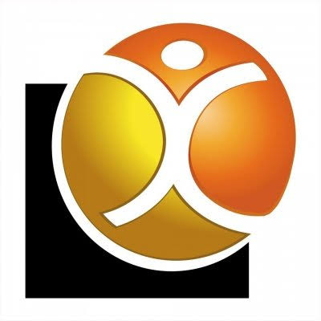
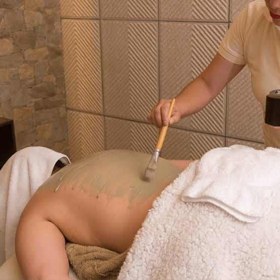
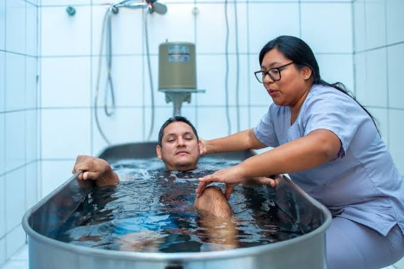
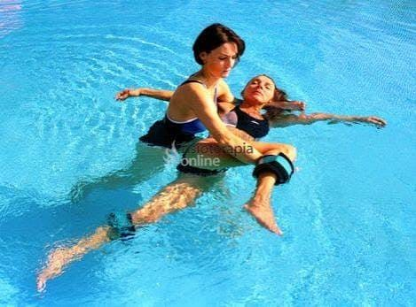
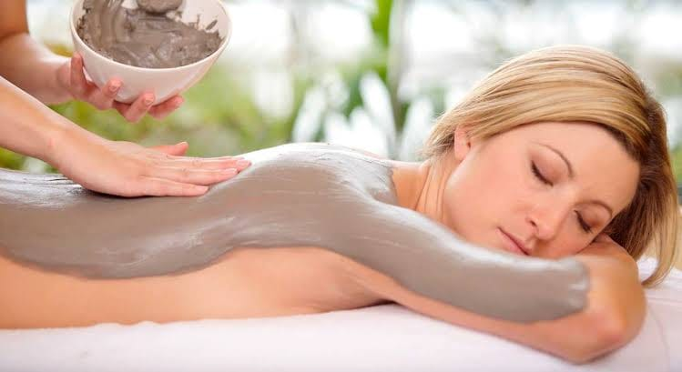

¿Qué es?
Es una técnica que emplea lodos terapéuticos o peloides preparados. En el documento base se estudian principalmente la aplicación de lodo y los baños de lodo.

Dos técnicas complementarias: fundamentos, aplicaciones estudiadas, diferencias y precauciones.
Explorar la comparaciónPara comprender qué caracteriza a cada técnica, reconocer en qué condiciones se han investigado y evitar confundir sus resultados. Está dirigida principalmente a estudiantes de Fisioterapia y resume la revisión documental del proyecto.
Importante: el material tiene fines educativos. No es un protocolo de tratamiento, no indica dosis ni temperaturas y no sustituye la valoración individual ni la supervisión de profesionales.Uso terapéutico de lodos o peloides preparados.
Es una técnica que emplea lodos terapéuticos o peloides preparados. En el documento base se estudian principalmente la aplicación de lodo y los baños de lodo.
Las publicaciones revisadas se centran principalmente en personas con osteoartritis de rodilla. Describen posibles mejoras a corto plazo en dolor, rigidez y función articular, según los estudios incluidos.
Liu et al. (2013) revisó estudios sobre tratamiento con lodo en osteoartritis de rodilla. El documento base informa siete estudios comparativos y 410 participantes.
Deben considerarse la higiene, la tolerancia cutánea, la temperatura y la valoración individual. Los resultados no deben generalizarse a otras patologías ni a cualquier tipo de peloide.
Uso terapéutico del agua y de sus propiedades físicas en rehabilitación.
Puede incluir distintas modalidades. Sin embargo, las investigaciones revisadas en el proyecto se centran principalmente en el ejercicio acuático.
Las publicaciones revisadas incluyen ejercicio acuático en personas con osteoartritis, dolor lumbar, adultos mayores y otros trastornos musculoesqueléticos. Algunos trabajos describen posibles mejoras en dolor, discapacidad o funcionamiento físico, dependiendo de la población y del programa estudiado.
Deben considerarse la seguridad del entorno acuático, la higiene y calidad del agua, el acceso y salida de la piscina, la supervisión y la condición individual. Los resultados del ejercicio acuático no representan automáticamente todas las modalidades de hidroterapia.
Aunque ambas son técnicas complementarias, utilizan medios distintos y sus investigaciones no deben mezclarse.
| Criterio | Fangoterapia | Hidroterapia |
|---|---|---|
| Medio utilizado | Lodos terapéuticos o peloides preparados. | Agua y sus propiedades físicas. |
| Fundamento | Características del peloide y condiciones térmicas de aplicación. | Flotación, presión hidrostática, viscosidad, resistencia y temperatura. |
| Modalidad más estudiada | Aplicación de lodo y baño de lodo. | Ejercicio acuático. |
| Población investigada principalmente | Personas con osteoartritis de rodilla. | Personas con osteoartritis, dolor lumbar, adultos mayores y otros trastornos musculoesqueléticos, según cada estudio. |
| Resultados descritos | Posibles mejoras a corto plazo en dolor, rigidez y función articular. | Posibles mejoras en dolor, discapacidad o funcionamiento físico, según el programa. |
| Precauciones | Higiene, tolerancia cutánea, temperatura y valoración individual. | Higiene del agua, seguridad del entorno, supervisión y valoración individual. |
| Limitación principal | No generalizar a otras patologías ni a cualquier tipo de peloide. | La evidencia sobre ejercicio acuático no equivale a evidencia sobre todas las técnicas acuáticas. |
Esta selección corresponde a las publicaciones identificadas en el documento base. Consulta los artículos originales para revisar población, métodos, resultados y limitaciones.
Las imágenes se ajustan dentro de su marco para verse completas, sin recortes.



